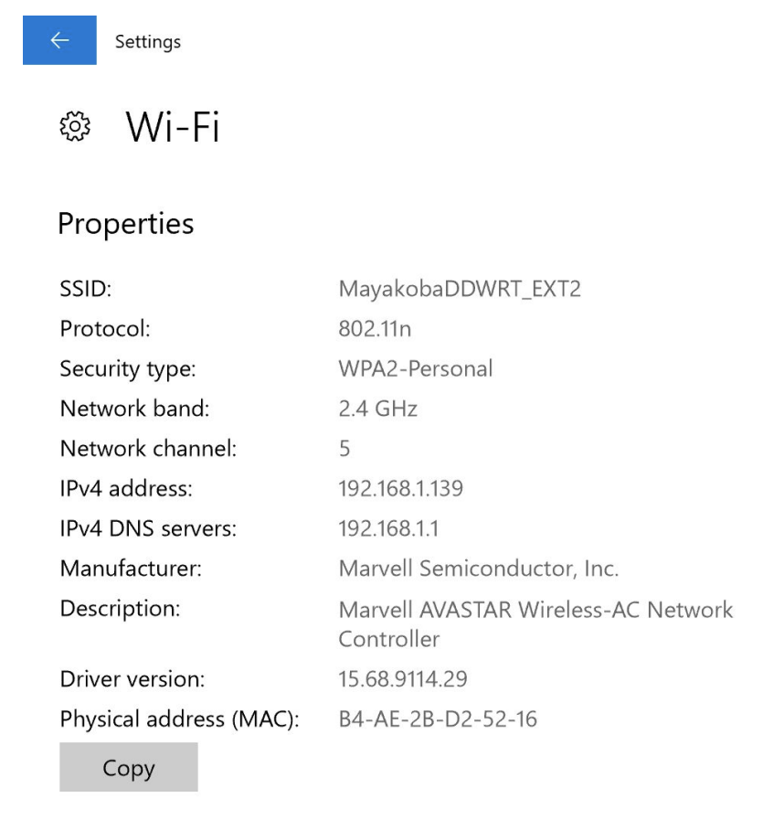
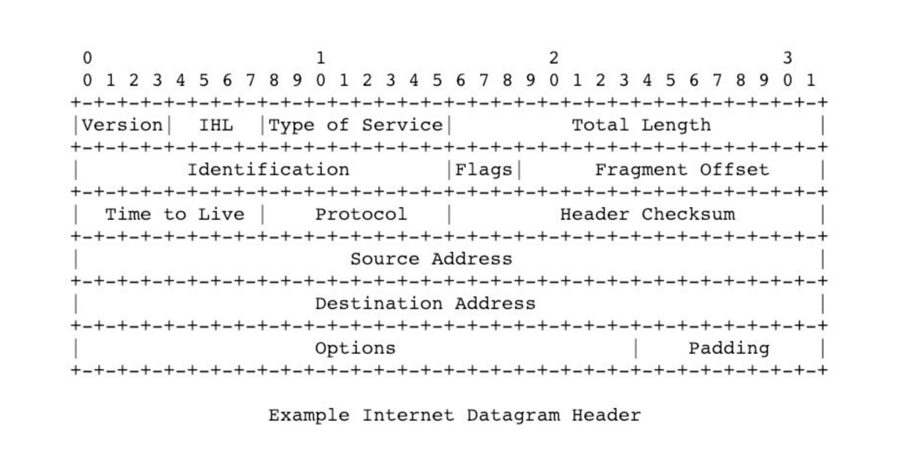
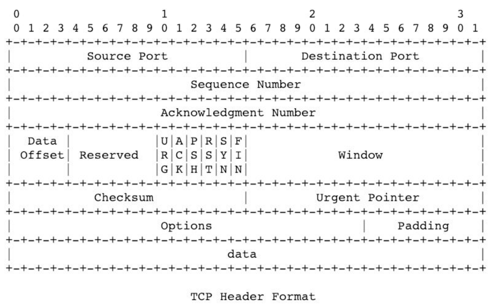
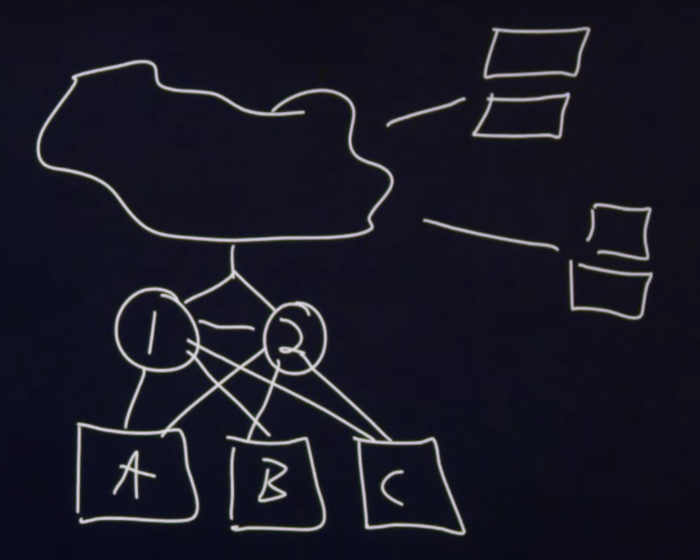
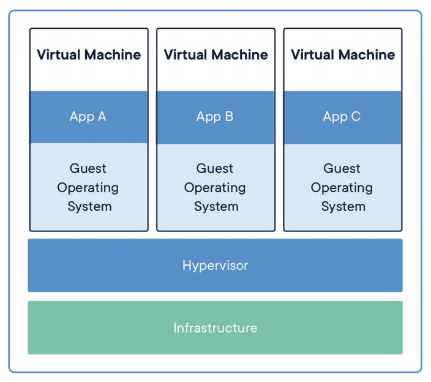
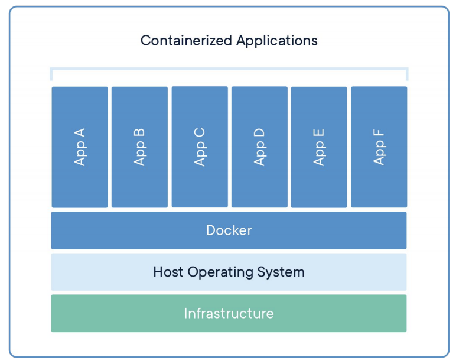

讲座 6
Introduction
-
For a tangible envelope, to send it to another person, we would have to address it, including the recipient’s information, our information, and perhaps some little memo on the bottom that specifies what’s inside, “fragile,” or some other annotation.
-
Our laptops, desktops, and our servers send messages in “virtual envelopes” 返回 and forth across the 互联网.
-
These “virtual envelopes” are simply patterns of zeroes and ones that represent our 电子邮件 or a request we’ve made of the web server.
Addresses
-
Let’s consider the 互联网 as an inter-networked collection of devices connected via wires or wirelessly.
-
All of these devices need unique addresses, just as every building in our 世界 needs a unique address.
DHCP Servers
-
DHCP stands for Dynamic Host Configuration Protocol and are run by whoever provides us with our 互联网 connectivity.
-
These servers are constantly listening for new laptops, desktops, phones, or other devices to wake up or be turned on and then shout “what is my address?” Then, these servers 答案 that 问题.
-
For 示例, they might respond to a newly awoken computer, “You’re going to be address
1.2.3.4.” -
These addresses are unique per particular device.
-
Now that we know our own address, we need to send this “virtual envelope” along to another address.
-
DHCP servers also tell us the address of where our “virtual envelope” should go 下一页, a router.
-
Routers route information from point A to point B to point C, and so on. These routers know the 下一页 addresses, so upon receiving our virtual envelope, they know which direction to send it off to.
IP
-
互联网 Protocol, or IP, mandates that every device on the 互联网 has its own IP address, and when we’re sending “virtual envelopes,” they must include the sender and recipient’s addresses.
-
IP addresses have format
#.#.#.#. Each#is a placeholder for a value starting at zero and ending at 255. Each placeholder represents 8 bits, so the entire address represents 32 bits. -
Since there are 32 bits in an IP address, there are 232 possible permutations of zeroes and ones, so there are approximately 4 billion devices that can have unique addresses on the 互联网.
-
These 32 bit IP addresses are of version 4 of IP. IPv6, version 6, uses 128 bits instead.
-
Public IP addresses actually go out onto the 互联网, while private IP addresses do not.
-
Private IP addresses have these formats:
10.#.#.#,172.16.#.#-172.31.#.#, and192.168.#.#. -
We can find our own IP addresses in our System Preferences or Settings. Below is a screenshot from a Windows 10 PC.

- 笔记 that the IP address begins with
192.168, meaning it is a private IP address.
- 笔记 that the IP address begins with
-
The router in our 首页 or in the company stops private IP addresses from being routed publicly, a firewalling mechanism.
-
Virtually, a firewall is a piece of software that prevents zeroes and ones from going from one place to another.
-
In this case, the firewalling mechanism allows data to be kept securely within our 首页 or within our company rather than allowing it to go out onto the 互联网.
-
-
If we wish to send data from our private IP address to an address outside of our 首页 or company, a border gateway or border router will receive our virtual envelope.
-
These border routers are routers that are at the edge of a 首页 or company. These routers will change the private IP address on our “virtual envelope” to a public IP address.
-
These routers use *network address translation** or NAT to convert our private IP address to a public IP address and 返回.
-
With private IP addresses, while it seems like the data being sent out from various devices is from the same device, or IP address, it is possible for the 首页 or company to determine which device was accessing the service at a particular 时间.
-
-
IP additionally gives us the feature of fragmentation, where if the file is very large, IP will fragment this file into smaller pieces and send multiple envelopes instead. Then, at the other end, this file will be reassembled.
- This leads to issues such as net neutrality, where the government and ISPs can treat different types of files (such as 视频, competitor services, etc) differently.
-
At a low level, the formal definition that humans created for IP is drawn below:

-
This is an artist’s rendition of what it means to send a pattern of bits, where the first few bits somehow relate to version, etc.
-
笔记 that the source and destination addresses are 32 bits long, as expected.
-
TCP
-
Transmission Control Protocol, or TCP, guarantees the delivery of our virtual envelope.
-
Routers might receive a “virtual envelope” and drop it (ignore it) because they’re too busy, which can occur when everyone’s streaming a news broadcast or playing the latest game online. The router just doesn’t have enough 内存, or RAM, inside of its system to handle it, so the “virtual envelope” is ignored.
-
TCP helps us get the 电子邮件 or webpage to its destination with much higher probability by adding little 笔记 that this packet is number 1 of 2, or 1 of 3, etc.
-
When the recipient receives packets two, three, and four but not one, TCP will tell that device to send a message 返回 to the sender asking to resend packet one. Then, the packet will be resent and the human will ultimately obtain the entire 电子邮件 or webpage.
-
At a low level, the formal definition that humans created for TCP is drawn below:

-
笔记 that there are no addresses—those are handled by IP.
-
Source ports and destination ports allow servers to distinguish one type of data from another.
-
These ports specify what protocol is being used to convey information from one computer to another.
-
HTTP (Hypertext Transfer Protocol): Convention via which browsers send servers send webpages 返回 and forth; HTTP is given TCP port 80.
-
HTTPS: Secure version of HTTP; HTTPS is given TCP port 443.
-
IMAP: Protocol via which one can receive or check emails; IMAP is given TCP ports 143 or 993 depending on the level of 安全.
-
SMTP: Protocol for outbound 电子邮件; SMTP is given TCP ports 25, 465, or 587.
-
SSH (Secure Shell): Connects from one computer to a remote server; SSH is given TCP port 22.
-
-
These ports are also written on our virtual envelope.
-
-
Thus, on our virtual envelope, we should include our address, the recipient address, the TCP port, and if the file is large, which number packet this packet is.
DNS
-
Domain 姓名 Service or DNS, is a server that translates domain names into their corresponding IP addresses.
-
Using DNS, we no longer need to know the IP address of Google, Facebook, among other websites. DNS will be able to convert that 姓名 into an address for us.
-
Thus, after we type in something like gmail.com, we need our DNS server to know which IP address gmail.com maps to. However, our DNS server might not know the IP address. In that case, there are larger DNS servers to which we can ask these 问题.
-
DNS is a hierarchical system where we might have a small DNS server, our ISP has a bigger DNS server, and if our ISP doesn’t know the IP address, then there are also root servers around the 世界, which have mappings for all of the dot coms and their IP addresses.
-
After asking the DNS server once, we can cache the results locally in our browser.
- This is 更多 efficient than asking the DNS server the same 问题 multiple times a day, but if the website reconfigures something and the IP changes, then the address becomes outdated.
-
We can find the address of our DNS server as well, shown below on a Windows 10 PC. 笔记 that the DNS server is an address for us not a 姓名, which is important since if we only had a 姓名, we would then need a DNS server to tell us the address of our DNS server. Oops!
-
We can, in the terminal, find the IP address of gmail.com using the function
nslookup, which stands for 姓名 server lookup.$ nslookup gmail.com Server: 10.0.02 Address: 10.0.0.2#53 Non-authoritative answer: Name: gmail.com Address: 172.217.3.37-
Google has 更多 than one server, and therefore 更多 than one IP address. The one IP address that is returned is
172.217.3.37, but actually, when we deliver a packet of information to Google, they’ll have many servers which can all receive that packet. -
The IP that we see happens to be the outward facing IP that our computers see.
-
-
We can also trace the route that our packets will go through using
traceroute.$ traceroute -q 1 gmail.com traceroute to gmail.com (172.217.7.229), 30 hops max, 60 byte packets 1 216.182.226.130 (216.182.226.130) 16.518ms 2 100.66.13.58 (100.66.13.58) 14.239ms 3 100.66.11.228 (100.66.11.228) 19.129ms ... 8 * 9 * 10 52.93.114.14 (52.93.114.14) 11.460ms ...-
Not all output is displayed. The … refers to other lines not shown.
-
-q 1askstracerouteto do one query at a 时间. -
In total, it takes 17 hops to get to gmail.com.
-
The asterisks refer to routers that did not respond to our request.
-
The times refer to how long it took to get from the 上一页 router to the current router. These times will differ each 时间 we send information to gmail.com.
-
-
If we try to visit a domain that is abroad, like cnn.co.jp, it takes 30 hops. Additionally, it takes 10 times 更多 时间 to get there than to get to gmail.com. We expect this because we’re crossing the Pacific Ocean!
Requesting Webpages
-
Now that we know how to address our virtual envelope, we might want to know what goes on the inside as well. When we request a webpage, what is on the inside of that envelope?
-
Let’s break down
https://www.example.com/.-
This is a Uniform 资源 Locator, or URL.
-
httpis a protocol, a set of conventions that web browsers and web servers have agreed upon to use when intercommunicating. -
wwwis the hostname or the 姓名 of the specific server that we’re trying to visit. In other contexts, we might call this a subdomain. -
example.comis a domain 姓名 that can be bought or rented on an annual basis.-
Historically,
.comstood for commercial,.netfor network,.edufor education, or.govfor government. -
These
.com,.net, among others, are called Top Level Domains, or TLDs.
-
-
/implies/index.html. By convention, the 姓名 of the file that contains the default web page isindex.html,index.htm, or any extension afterindex. -
This file is the file that is specified inside the envelope.
-
-
This is what is written inside our envelope:
GET/HTTP/1.1 Host: www.example.com- The first
/means the default page of the website. - The host is specified since one web server can serve up multiple websites.
- The first
-
If no errors occurred, we expect to get a response 返回 with this written:
HTTP/1.1 200 OK Content-Type: text/html-
200 means OK, meaning the webpage we were looking for has been delivered successfully.
-
The content type is text/html, which lets our browser know what type of file we’ve received, so our browser will know how to display the file on the screen.
-
Other headers 五月 include
HTTP/2instead ofHTTP/1.1, which gets data to us even 更多 quickly.
-
-
In the terminal, we can use
curl, or connect to a URL, and specify-I, which returns to us just the HTTP headers.$ curl -I http://harvard.edu/ HTTP/1.1 301 Moved Permanently ... Location: https://www.harvard.edu/ ...-
Certain lines are omitted and replaced with
... -
When our browser sees
301 Moved Permanently, it looks for the 地点 line and takes us to that page, which in this case ishttps://www.harvard.edu/. -
The differences in the two URLs are the
httpversushttpsand the inclusion or exclusion of thewwwsubdomain. -
When transmitting information,
httpkeeps the content in English text, buthttpsencrypts the content. Thus,httpsis secured whilehttpis not, and Harvard moved their site permanently, as they would like us to visit their site securely. -
Browsers have become 更多 user friendly, so we generally don’t see certain prefixes anymore, such as
www. -
However, having a subdomain can be useful. For 示例, storing cookies in a subdomain rather than a domain allows the scope via which they can be accessed to be narrower.
-
- HTTP status code responses include:
- 200 OK
- 301 Moved Permanently
- 302 Found (temporary redirection)
- 304 Not Modified (this code is sent when a webpage has not been modified since we last visited, meaning we can just use our cached version of the webpage)
- 401 Unauthorized
- 403 Forbidden
- 404 Not Found
- 418 I’m a Teapot (四月 Fools Joke!)
- 500 Internal Server Error (logical or syntatic error in the code that someone has written)
- …
-
For fun, if we go to http://safetyschool.org, we are redirected to www.yale.edu!
-
We can write this in the terminal to see what exactly is happening…
$ curl -I http://safetyschool.org/ HTTP/1.1 301 Moved Permanently ... Location: http://www.yale.edu/ ... -
The website has permanently moved (for years now!) to http://www.yale.edu.
-
Scaling
-
We know how to get data from point A to point B. What if there are so many devices trying to access data at point B that the server cannot keep up?
-
We might start with just one server, such as the one pictured here.
-
This server is only able to 阅读 some finite number of packets per unit of 时间, as it has finite 资源. If we receive 更多 packets than the server can handle, the server might either drop these packets or it might crash.
Vertical Scaling
-
One solution to handle 更多 users is to buy a larger server with 更多 RAM, CPU, and disk space.
-
In a sense, we are “throwing money at the problem” in this case, as we’re simply purchasing a larger server.
-
However, Dell only sells servers that operate so quickly and have so much disk space. If we need to handle even 更多 users, we’ll need another strategy.
Horizontal Scaling
-
Instead of purchasing one very large server, we can purchase 更多 of the smaller servers. In this case, we’re spending 较少 and obtaining 更多 hardware.
-
With multiple small servers, we must interconnect them. Here’s a diagram of 2 servers named
AandB, the cloud, and 2 laptops making requests on our servers. -
In order to distribute the load to each server, we might use DNS. When one laptop requests our site, we can 答案 that request with the IP address of
A. The 下一页 request we can 答案 withB. We can continue in this fashion so that half of the requests are sent toAand the other half toB. -
However, if one customer imposes 更多 load than another, then server
Amight be under a lot 更多 pressure than serverB. To fix this, we can use a load balancer. -
Load balancers communicate bidirectionally with the servers. If server
Asays that they have space and serversBandCsay that they are handling too many requests, then the load balancer can start directing traffic to serverA. -
In this diagram, we’ve added server
Cand added a load balancer at the dot. -
笔记 that in this diagram, we have a Single Point of Failure, or SPOF. If the load balancer goes down or gets overwhelmed, no requests will reach the server.
-
To fix this, we can add another load balancer. These are labelled
1and2in the diagram below.
-
The two load balancers communicate with each other. Similar to how our heartbeat signals to us every second or so that we are alive, if load balancer
1is up and running,1will tell2that they are alive. If2does not get a signal from1eventually, then2will take over the role. -
By default, only 1 of the load balancers will be working. If one fails, the other will take over.
-
Architecting networks refers to building up these complex interconnected networks.
Virtualization
-
Virtualizing hardware refers to creating software, and running it on hardware, such that it creates the illusion that one computer is two, or one computer is ten. This allows one piece of hardware to be sold multiple times.
-
This virtualization creates the illusion that we have one server per customer, but actually, all ten of the customers are on the same machine. Importantly, each customer cannot access another customer’s data.
-
Using the cloud refers to using servers somewhere else that someone else is managing. Companies like Amazon, Microsoft, or Google have these servers that we can access which create the illusion of our own servers, known as virtual machines.

- Infrastructure is the actual hardware.
- Hypervisor is a software called VMware or Parallels, which virtualizes this hardware.
- Within the Virtual Machines, different OS’s and apps can be installed.
Containerization
-
Within virtualization, we might 笔记 that there is duplication, particularly for the operating systems.
-
Containerization shares 更多 software. Instead of installing operating systems three times, we might install it once which allows for 更多 room, where we might be able to run six apps instead of just three, as in virtualization.

- Docker is a program that provides us with the ability to run these apps.